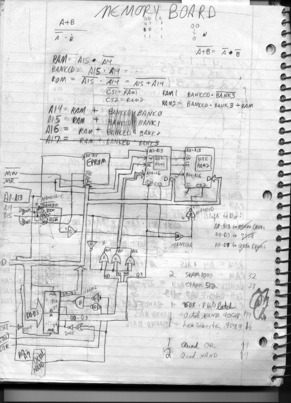
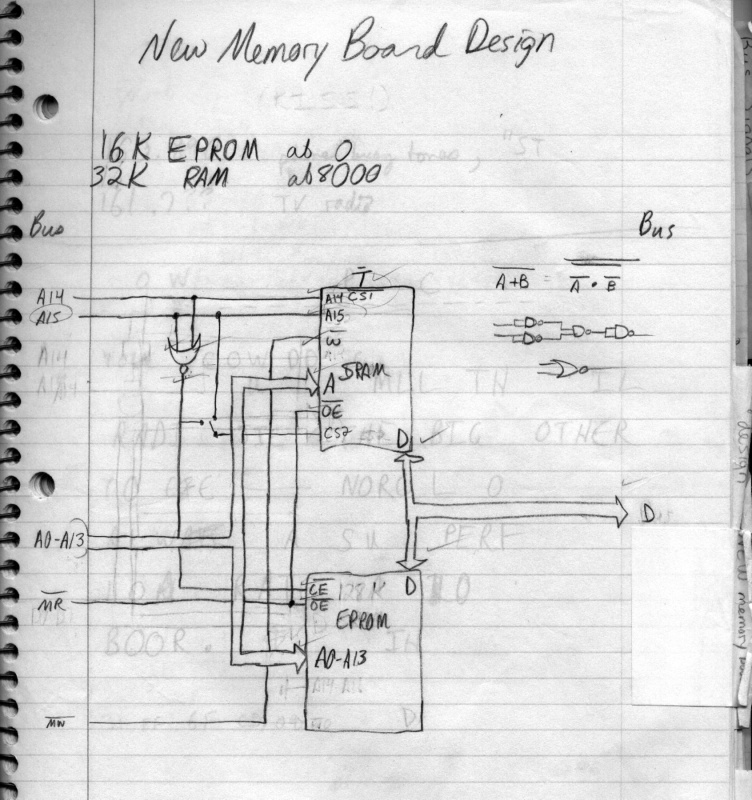
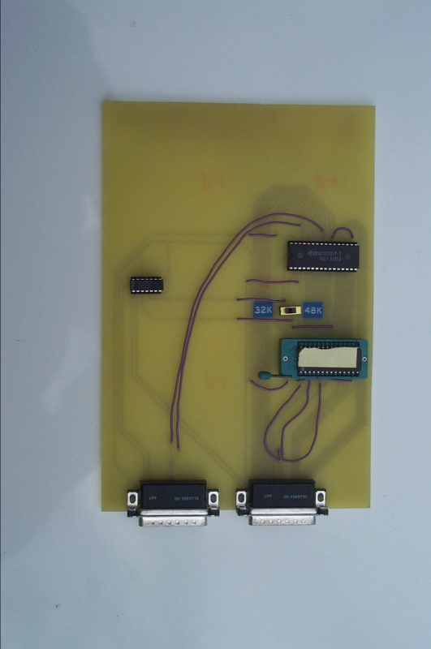

Memory Board
The third board that we implemented contained our RAM and ROM circuit. At first we had an ambitious bank-switched design but later decided to build a very simple circuit with just one chip each for RAM and ROM.
Several of our design decisions precipitated from the parts we had laying around. From the Alice I project, we already had two 128K static RAM (SRAM) chips and some electrically programmable ROM (EPROM) chips. The dynamic RAM (DRAM) chips used used in computers today use a very cheap and simple circuit that decays quickly, so the memory controller must refresh that memory. SRAMs do not need a refresh cycle and so are much easier to design around. We also bought (for Alice II) several 16K EPROMS to store our boot and utility code. Our original design included both SRAM chips in a bank-switched configuration that included a lot of decode logic. The banks would have been switched using an I/O port and would have allowed us to use a kind of segmented memory; 16K of memory at 08000H would have been fixed, and 16K at 0C000H would have been switchable. In our wildest dreams we thought that maybe we could build a simple task-switching system that would actually keep different programs in different banks. In the end we couldn't find the motivation or the time to build software nearly that sophisticated. We started to prototype this memory board but finally decided that it was too much for our needs. (And probably too complex for us to have built successfully.)
Our final memory board eliminated almost all of the decode logic except for enough to switch between the ROM and RAM. We wasted most of one 128K SRAM and provided a hardware toggle to enable or disable one 16K region in case we wanted to use it for memory-mapped I/O on another board. We did finally use it for video memory on the video board, leaving 32K of RAM. We incorporated the 16K EPROM on the board with a zero-insertion force (ZIF) socket, so we could easily switch out EPROMs to try new code. That turned out to be a little more painful than we expected, because our drilling wasn't completely regular, and slight positioning differences in the pins of the socket caused the slots in the socket to be out of alignment. We ended up having to carefully position the EPROM as it was inserted in order to guarantee that its pins were held by the socket.
Finally, we created the circuit template online, created a circuit board, and soldered the memory board together. It worked pretty well for us and was probably the simplest board we built.
Using an EPROM introduced a whole set of preparation issues into the project. We used ultra-violet erasable EPROMS (UV-EPROMS) and bought a UV-EPROM eraser (basically a box with a UV lamp in it and indentations so the EPROMS rested up against the lamp). The eraser never seemed quite reliable, probably because we were sloppy with it and because we bought surplus EPROMS. Sometimes we'd erase for more than half an hour and still not have blanked the EPROM. Occasionally we'd forget to turn off the lamp and find the next day (or even later) that we'd ruined an EPROM. We were also nervous about leaving the programmed EPROMS out without labels for fear that sunlight would hit them and erase the program partially. We bought an EPROM programmer with DOS software and discovered that hardware engineers write software about as well as we designed hardware. We used Linux to design boards, write and assemble Z-80 code, and transfer programs to Alice II when we later built an I/O board, but we still had to reboot into DOS to program the EPROM.